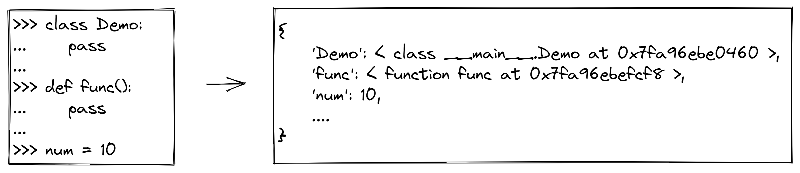

转载或者引用本文内容请注明来源。
Python is a clear and powerful object-oriented programming language, comparable to Perl, Ruby, Scheme, or Java. [1]
从官方对Python的介绍中可知，Python是一门可与Perl、Ruby、Scheme、Java等相媲美的面向对象的编程语言。可见，Python从设计之初就是一门面向对象的语言。而且，相较于Java等面向对象的编程语言，Python的面向对象的思想贯彻地更彻底。
对象的三个特性 #
在Python中，所有对象都拥有以下三个特性：
-
唯一身份（unique identity）
每个对象都有一个唯一的身份标识自己，在对象创建后就不可被修改。在CPython中，使用对象的内存地址作为对象的唯一身份。
我们可以通过Python内置函数
id()来获取对象的身份ID。>>> n = 10 >>> id(n) 3007271168592 -
类型（type）
对象的类型决定了对象拥有的属性和方法，可以进行的操作等。同样的，对象的类型也是不可更改的。
我们可以通过Python内置函数
type()来获取对象的类型。>>> n = 10 >>> type(10) <class 'int'> -
值（value）
对象的值是对象所表示的数据或内容。
对象的类型决定了对象的值是否可被修改。值可被修改的对象，称为可变对象（mutable），值不可被修改的对象，称为不可变对象（immutable）。
对象的名称 #
在Python中，对象的名称有一定的特殊性，它不属于对象的特征，而对象本身也不知道它自己叫什么名字。
理解对象名称需要我们把握好以下几个要点：
-
名称不是对象的固有特征，一个对象可以有任意多个名称，也可以没有名称。
-
Python的命名空间（namespace）管理着对象名称和对象的映射关系。
命名空间可理解为一个字典，其中字典的键是对象的名称（变量名），而字典的值是对象本身。这样，通过对象的名称（变量名）就可以索引对象本身了。

-
赋值语句修改的是命名空间中对象名称（变量名）和对象本身的映射关系，而不是修改对象本身。

一切皆对象 #
One of my goals for Python was to make it so that all objects were “first class.” By this, I meant that I wanted all objects that could be named in the language (e.g., integers, strings, functions, classes, modules, methods, etc.) to have equal status. That is, they can be assigned to variables, placed in lists, stored in dictionaries, passed as arguments, and so forth. [2]
Guido van Rossum
在Python中，一切皆对象。正如Python之父Guido van Rossum所解释的，在Python中，整数、字符串、函数、类、模块、方法等通通都是对象，具有同等的地位。也就是说，可以将它们分配给变量、放置在列表中、存储在字典中、作为参数传递等等。
我们可以从前两节的内容来说明一切皆对象的内涵：
-
无论是内置类型、函数、类等都是对象，拥有对象的三个特性。
-
对象名称（变量名）只是对象的索引，赋值操作修改的是对象名称（变量名）和对象的映射关系。因此，这就允许我们把对象赋值给任意变量名、当作参数传递、从函数中返回对象等。
理解好Python对象的三个特性，以及对象名称和对象的关系，就比较容易理解Python中一切皆对象的含义了。
[1] https://wiki.python.org/moin/BeginnersGuide/Overview
[2] http://python-history.blogspot.com/2009/02/first-class-everything.html